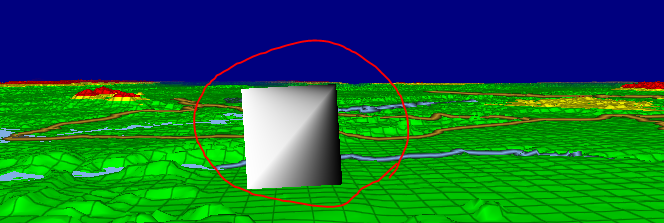
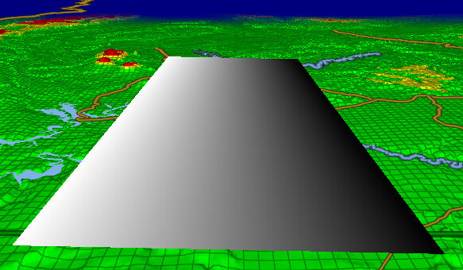
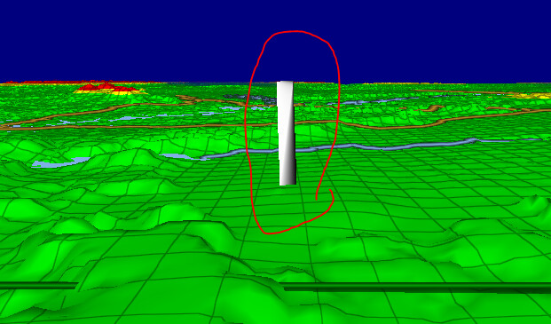

Our map app shows Vector lines in 3D perspective, and the camera is often aligned to a line (e.g. a route line you are traveling). The goal is that these lines are all fixed-screen-width no matter how far they are from the camera in 3D space. To make the lines standout and look anti-aliased, we employ a gradient for both color (fade to black) as well as fade Alpha at the edges. The end result looks fantastic, with one caveat – When the camera is close-up and aligned to one of these lines, it’s easy to notice a gradient-interpolation defect.
Each line consists of 2 triangles, where the left-side gradient coordinate is 0 and the right-side is 1. This looks perfect from top-down or side-views. But when looking at it straight on, since we are contorting the line segment to maintain fixed-width in screen space, the gradient is grossly messed up, and you can see the triangles now… (see image #2 below).
What we want to achieve is for the gradient to occur in Screen-Space, not Clip-Space (because the W values still vary wildly – as the far segment of the line is further away). The virtual effect in 3D space is that we’ve enlarged the width of the line at far distances, to make them have fixed-width (although we do all of these manipulations in ClipSpace/ScreenSpace).
How do we make the Gradient Interpolation in the Fragment Shader ALSO occur in ScreenSpace, instead of ClipSpace (where the W value let’s it know the true spacing in 3D, vs. Screen space, and thus contorts our gradient!).
Screenshot #1 - show the top view – gradient looks fine.
Screenshot #2 shows the ground-view aligned with line - here Gradient is CONTORTED:
(the camera is near ground, looking right down the barrel of this line, almost - just above it)

NOTE - I have widened this line segment for illustration only. It’s going to be skinnier, but even when skinny, the contortion of gradient looks very bad. So we need to fix this.
And here is our Shader code that produces this contorted result:
// Every Line Segment consists of 4 unique (non-reused vertices).
// Vertices 1-2: Both are StartPoint, one for each Side of the line (worldPos.Y polarity = Side. -1=Left, +1=Right side.
// worldPos2 - is the coordinate for the EndPoint of the line segment. Y component = +1, to indicate that the vertices are the StartPoint.
// sideSelect = -1 for 1st Vertex, and +1 for 2nd Vertex (left side, and right side)
// endSelect = +1 for both of these vertices (indicates that we’re at teh Start Point).
//
// Vertices 3-4: Both are EndPoint, one for each Side of the line (worldPos.Y polarity = Side. -1=Left, +1=Right side.
// worldPos2 - is the coordinate for the StartPoint of the line segment. Y component = -1, to indicate that the vertices are the End Point
// sideSelect = -1 for 3rd Vertex, and +1 for 4th Vertex (left side, and right side)
// endSelect = -1 for both of these vertices (indicates that we’re at the EndPoint)
//
void VS(float4 worldPos : POSITION, // Position of current line Endpoint in WorldSpace. Y component == sideSelect, used for vertex offset
float3 worldPos2 : NORMAL0, // Position of the Next EndPoint in WorldSpace Y component == polarity (+1 = StartPoint, -1 = End Point)
out float oFade : TEXCOORD0, // Used to create the Left-to-Right Gradient for this line
out float4 clipPos : OUTPOSITION) // Position of this Vertex in ClipSpace
{
float sideSelect = sign(worldPos.y); // -1 for LeftSide of Line; +1 for RightSide of line (used to control gradient, and perpendicular offset)
float endSelect = sign(worldPos2.y); // +1 for StartPoint, and -1 for EndPoint. (used below to select the opposite Perpendicular offset)
worldPos.y = abs(worldPos.y); // Y position is always positive. The polarity for this Y component used above to indicate 'sideSelect'
worldPos2.y = abs(worldPos2.y); // Y position is always positive. The polarity for this Y component used above to indicate 'endSelect'
clipPos = GetClipPos(worldPos);
float2 screenPos = clipPos.xy / (clipPos.w);
float4 clipPos2 = GetClipPos(worldPos2);
float2 screenPos2 = clipPos2.xy / (clipPos2.w);
float2 sDir = screenPos2 - screenPos;
float2 nDir = normalize(sDir);
float halfWidth = endSelect * 0.1 * clipPos.w;
float2 posOffset = float2(sideSelect * halfWidth * nDir.y, -sideSelect * halfWidth * nDir.x); // Select the Left/Right Perpendicular offset from end point
clipPos.xy += posOffset;
if (sideSelect < 0) // Left Side, White
oFade = 1.0;
else // Right-Side, fades to Black
oFade = 0.0;
}
void PS(
float oFade : TEXCOORD0,
out float4 oColor : OUTCOLOR0)
{
oColor = float4(oFade, oFade, oFade, 1.0);
}
====
NOTE: If I modified the Vertex Shader line to be:
float halfWidth = endSelect * 0.1; // stop multiplying by this: * clipPos.w;
Then the end result is that it gets smaller as it gets further away (perspective mode), then the Gradient fixes itself. BUT, we cannot have our lines fade; they must maintain fixed width – and thus the Gradient gets cortorted. Here’s what the ground-view looks like of this line if I make the above edit to the vertex shader: (BUT we aren’t permitted to do this, so this is only for illustration of the Gradient technique working for perspective mode)

.
.
Since we must used Fixed-Width lines, in ground-view, our lines instead look like this (BAD):
.
.
Here’s another view of the defect Ground-View for this line, but this one is skinnier, so it looks more like a line. Here you can still see the impact of gradient contortion in ClipSpace:

.
.
SUMMARY: Our end goal is to figure out how to tell the Fragment (pixel) shader to apply the Gradient in ScreenSpace, not ClipSpace, so that it’s even and looking good.